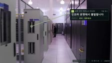
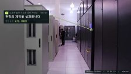
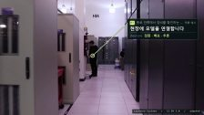

인프라 안으로 들어가 보세요. 지와이즈는 서버와 네트워크 운영에서 시작했습니다.
지와이즈는 서버 호스팅, 가상 PC, 스마트 CCTV와 출력 보안 현장에서 쌓은 운영 경험을 엣지 AI 플랫폼 ZiewCore에 연결합니다.



서버·네트워크 운영 경험을 기반으로 현장 적용과 연구개발을 이어갑니다.
데이터센터의 서버 호스팅 및 가상 PC 운영서비스에 대한 정보보호 관리체계 인증입니다. 유효기간 2024.09.24–2027.09.23.
벤처기업확인기관의 혁신성장유형 확인입니다. 유효기간 2025.08.26–2028.08.25.
한국산업기술진흥협회 인정 연구개발전담부서입니다. 인정번호 제2024154736호.
대표이사 이승현 · 사업자등록번호 392-87-02849서울특별시 금천구 가산디지털2로 165 백상스타타워2차 1206호
운영과 보안 경험을 바탕으로 현장의 제약에 맞는 구성을 설계합니다.
이 경험을 바탕으로 모델의 검증과 배포, 현장 추론을 연결합니다.
실제 촬영한 영상에서 한 동선을 발췌했습니다. 재생 속도를 조정하고 물체의 위치에 지와이즈 솔루션의 적용 예시와 한국어 합성 음성 해설을 덧붙였습니다.
Data Center Tour & Technical Deep Dive into the Power, Data and Cooling Infrastructure!
약 8분 33초부터 이어지는 원본 장면을 발췌해 무음으로 편집하고 재생 속도와 색조를 조정했습니다.